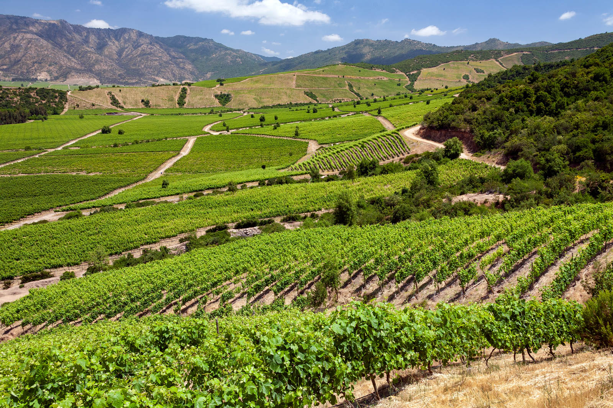
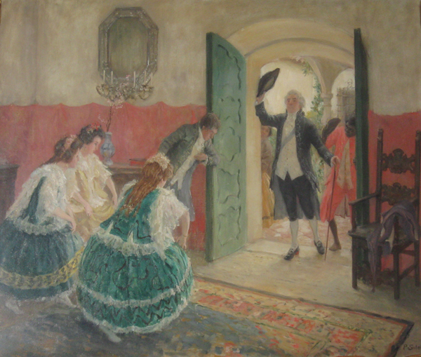

Orígenes en el Imperio Romano
Los registros históricos más antiguos sobre este linaje datan del primer milenio. El General Moragas (395-423 d.C.) es uno de los más mencionados de aquella época, documentándose que sirvió en los ejércitos del emperador Honorio (395-423), regente del Imperio Romano de Occidente, durante el alzamiento de diversas tribus bárbaras y facciones de su propio gobierno.
En varios documentos datados en aquella época se cita a esta familia como "Ecuestre" y "Senatorial", por lo que sus orígenes podrían ser aún más antiguos que los registros formales. Tras la caída del Imperio Romano de Occidente, la Familia Moraga se estableció en España, construyendo varias Casas Solares a lo largo y ancho de la Península: Tarragona, Mallorca, Extremadura y América, entre otros.
Ya en el año 1212, el caballero catalán Arias Moragas tuvo una participación registrada en la Batalla de las Navas de Tolosa, que terminó con una victoria de los ejércitos cristianos frente a los musulmanes del Imperio Almohade, marcando el inicio de su expulsión del Reino de España tras casi ocho siglos de ocupación.
Orígenes en Cáceres

En el corazón de Cáceres, Extremadura, en las tierras de la meseta castellana, se asienta una de las casas solares de la región con mayor antigüedad en el Reino de España. Este linaje de origen catalán estableció su presencia en Cáceres durante las primeras décadas del siglo XV, desarrollándose como una familia dentro de la estructura social y administrativa de la región.
La Casa-Palacio de los Moraga en la Plaza de Santa María
La actual casa-palacio de los Moraga, ubicada en plena Plaza de Santa María, conserva sus muros ancestrales de piedra desde el siglo XV, testimonio de siglos de tradición, poder y continuidad familiar. La fachada presenta una inscripción histórica que reza: "CASSA DE NVESTRA SEÑORA I POBRES QUE FVE D LOS MORAGA", testimonio visible de la evolución del edificio desde residencia nobiliaria hasta institución de caridad.
La familia de los Moraga aparece en la ciudad en la segunda mitad del siglo XV. Un miembro destacado fue Juan de Moraga, quien fue uno de los 48 caballeros seleccionados por Isabel la Católica para formar un ayuntamiento equilibrado durante su histórica visita a Cáceres en 1477. La reina colocó los nombres en dos bonetes correspondientes a los dos bandos de la ciudad ("los de arriba" y "los de abajo"), siendo Don Juan del grupo de abajo. De cada sombrero extrajo seis nombres para constituir un gobierno que dejara atrás las antiguas rencillas nobiliarias.
A finales del siglo XV, María de Moraga se convirtió en Priora del Convento de Santa María de Jesús (actual edificio de la Diputación) en 1491, siendo probablemente su primera priora tras la fundación del convento en 1490, cuando relevó al anterior Beaterio.
Posteriormente, Marta de Moraga donó la casa al convento, pasando a ser conocida como "De Nuestra Señora y Pobres", con diversas funciones caritativas a lo largo de los siglos. Cuando el convento desapareció, el inmueble pasó a manos del Obispado de Coria-Cáceres, convirtiéndose en Rectoría y siendo conocido también como "La casa del Deán".
Durante el siglo XX, la casa cayó en estado de semirruina debido al abandono. Fue adquirida por la Diputación de Cáceres en 1999 por 30 millones de pesetas, y rehabilitada en 2006 con una inversión de 666.666 euros para albergar el Centro de Promoción de la Artesanía.
La fachada destaca por su puerta con arco de medio punto de dovelas, un balcón y dos escudos de familia. Las gárgolas que la adornan, con rasgos simiescos y grotescos, recuerdan al estilo arquitectónico cacereño del siglo XVI.

Lope de Moraga: Caballero y Regidor
Lope de Moraga no era un plebeyo; ostentaba la calidad de Caballero, una distinción jurídica y social de gran relevancia en la Castilla bajomedieval. Esta condición implicaba la posesión de bienes suficientes para mantener caballo y armas. Su estatus se confirma por su desempeño como Regidor de Cáceres en el año 1466, un cargo municipal reservado a las familias de linaje conocido y solvencia económica. Además, el documento señala que poseía tierras en Valdefuentes, indicando una base económica agraria que prefigura el comportamiento de sus descendientes en Chile.
Bernardino de Moraga Galíndez, nacido en esta ciudad fortificada, representa otra generación relevante en la historia del linaje, siendo ancestro directo de quienes partirían hacia el Nuevo Mundo en el siglo XVI.
Llegada y Establecimiento en Chile

Hernando Galindo de Moraga Gómez y Saavedra constituye el fundador del linaje en Chile. Nacido en 1522 en la ciudad de Cáceres, Extremadura, formaba parte de la Casa de Moraga que emerge en las primeras décadas del siglo XV, siendo Luis de Moraga Continuo de los Reyes Católicos.
Antes de su arribo a la Capitanía General de Chile, Hernando de Moraga había participado en las campañas del Virreinato del Perú bajo las órdenes de varios capitanes, combatiendo contra la rebelión de Gonzalo Pizarro, participando en las batallas de Guarina y en el Callao. Llegó a Chile en 1551 y participó activamente en el Periodo de la Conquista y la Guerra de Arauco, formando parte de las expediciones españolas que se internaron en territorio mapuche.

"En la cuesta de Marihueñu, el gobernador Villagra sufrió una derrota donde participó Hernando Moraga como capitán bajo su comando directo. Los españoles perdieron 95 de 150 soldados, hecho que marca la dureza de la Guerra de Arauco".
— Historia de Concepción 1550-1970. Fernando Campos Harriet.

Tomó parte en la Batalla de Marihueño (1554) al mando de Francisco de Villagra. Participó en la fundación de las ciudades de Valdivia (febrero de 1552) y Osorno (1558). Desempeñó cargos de relevancia como Alcalde Ordinario de Osorno y alcalde de primer voto en Valdivia en múltiples ocasiones.
En 1561 contrajo matrimonio en Santiago con Elvira de Ribera Mendoza y Grijalva, también de origen español. Fruto de esa unión nacieron varios hijos, entre ellos Mencía de Moraga y Ribera (1562), quien sería relevante para la continuidad del apellido en Chile.
Desastre de Curalaba (1598)
Para Hernando de Moraga, este suceso significó la pérdida de todo lo construido en décadas de esfuerzo. Junto a su esposa Elvira de Ribera y sus hijos pequeños se trasladó a la capital en 1598. Sin embargo, la familia logró recomponerse, iniciando su expansión terrateniente por la Provincia de Santiago, Chacabuco y Colchagua.
Transmisión Matrilineal
La continuidad del apellido Moraga en Chile estuvo en riesgo debido a la escasez de descendencia masculina en la primera generación. Sin embargo, la descendencia de Mencía de Moraga cobró particular importancia. En 1580, contrajo matrimonio con el capitán Francisco Pérez de Valenzuela y Buisa, participante de la conquista y encomendero en Valdivia. De esa unión nacieron tres hijos varones: Lorenzo, Juan y Francisco Pérez de Valenzuela y Moraga, cuya descendencia perdura hasta el día de hoy.
En particular, el primogénito Lorenzo Pérez de Valenzuela y Moraga Núñez (1597-1647) decidió adoptar el apellido materno Moraga, asegurando así su transmisión a las siguientes generaciones. Esta práctica, no inusual en la época, ocurría cuando una familia quería perpetuar un apellido de prestigio materno ante la falta de herederos varones directos. Desde Lorenzo en adelante, los hijos de esta rama llevarían Moraga como apellido, consolidando el linaje en Chile.
Consolidación en Colchagua y Zona Centro de Chile

Durante los siglos XVII y XVIII, la Familia Moraga se arraigó en la Zona Central de Chile. Tras haber abandonado la frontera araucana, sus miembros se convirtieron en terratenientes rurales en regiones al sur de Santiago. Ya a inicios del siglo XVIII la familia poseía haciendas, especialmente en la Provincia de Colchagua (actual Región de O'Higgins).
Documentos coloniales registran que Francisco de Aránguiz y Moraga (1726-1796), hijo de Francisco de Aránguiz Riberos y Josefa de Moraga Ruíz de Peralta, y su esposa María de la Concepción Mendieta Leiva, eran dueños de la extensa Estancia de Nancagua. Esta propiedad agrícola fue administrada por generaciones de sus miembros, siendo una propiedad de extensión y producción considerable para la época.


La influencia de esta familia no se limitó a la acumulación de hectáreas, sino que se manifestó en la creación de espacio urbano y religioso. En 1789, Francisco Aránguiz y Moraga y su esposa donaron formalmente los terrenos para la construcción de la Iglesia Parroquial de Nancagua, bajo la advocación de Nuestra Señora de la Merced.

En el ámbito público, Francisco de Aránguiz y Moraga fue designado Alcalde de Santiago en 1779 y posteriormente nombrado Tesorero de la Santa Cruzada en 1783. Este cargo implicaba la gestión de los fondos recaudados para la iglesia mediante indulgencias.

La Hacienda de Chacabuco
La Hacienda de Chacabuco es otra de las propiedades características de esta familia colonial chilena, ubicada a un costado del camino que antiguamente conectaba Santiago con el Virreinato del Perú. Su casa patronal y capilla, reconstruidas tras el terremoto de 1730, se erigían como un símbolo visible de dominio sobre el paisaje y el territorio.
Con algunos miembros en el Primer Congreso Nacional de Chile y siendo adherentes a la causa patriota, la Familia Moraga de Chacabuco puso su propiedad al servicio de la revolución. En febrero de 1817, la hacienda se convirtió en el cuartel general y lugar de refugio para el Ejército de los Andes, comandado por el general José de San Martín y el general Bernardo O'Higgins, tras la Batalla de Chacabuco.

Los combates se libraron en parte en torno a la Casa Patronal y terrenos de Chacabuco, y según la tradición, tras la victoria patriota el propio San Martín y O'Higgins habrían pernoctado en esta propiedad, la cual también sirvió como Cuartel General y hospital de sangre para atender a los heridos del Ejército Libertador.

Ignacio José de Aránguiz Mendieta, hijo de Francisco de Aránguiz Moraga, sirvió como Teniente Coronel de Milicias, perteneciente al Regimiento de Caballería de San Fernando, y estuvo presente en el cabildo de 1810 junto a su tío José María Moraga. Aránguiz Mendieta fue diputado por Huasco en el Primer Congreso Nacional de 1811.
Fray José María Moraga y Fuenzalida: El Primer Te Deum del Chile Independiente
El presbítero José María Moraga y Fuenzalida tuvo una participación registrada en los eventos fundacionales de la Independencia de Chile. En calidad de clérigo ilustrado y vecino de la capital, asistió al Cabildo Abierto del 18 de septiembre de 1810 en Santiago, apoyando la formación de la Primera Junta de Gobierno.
Posteriormente, el padre Moraga y Fuenzalida firmó el Reglamento Constitucional Provisorio de 1812, una de las primeras constituciones chilenas, en representación del clero. Su apoyo a la causa patriota quedó de manifiesto cuando escribió a la Junta de Gobierno denunciando al Provincial José de Lasarte por supuestamente oprimir a los religiosos adictos al nuevo orden, defendiendo "la constante adhesión al nuevo Gobierno" y el "ardiente Patriotismo" por la causa americana.
Este sacerdote tuvo un rol prominente en ceremonias simbólicas de la independencia: ofició el primer Te Deum celebrado en la Catedral de Santiago tras la Jura de la Independencia el 12 de febrero de 1818, y meses más tarde fue orador principal en la reapertura del Instituto Nacional el 20 de julio de 1819, evento presidido por Bernardo O'Higgins.

Como Lector de Vísperas en 1819, Moraga y Fuenzalida recibió el grado académico de Doctor en Sagrada Teología otorgado por gobiernos patriotas, título que en aquella época solo se concedía a personas probadas en su lealtad a la causa independentista.
Familia Moraga en el Rodeo Chileno

La Familia Moraga ha dejado una huella profunda en la historia del Rodeo Chileno, participando durante generaciones en la preservación y desarrollo de este deporte nacional. Este linaje fue reconocido desde la época de la Colonia como criadores y preparadores de caballos, estableciendo una reputación que atravesaría generaciones.
El exponente más reconocido de esta tradición es Ramón Antonio Cardemil Moraga (1917-2017), reconocido como jinete destacado en la historia de Chile. Nació en Ranguil, un pequeño poblado ubicado en la comuna de Lolol, en la Provincia de Colchagua.
Ramón se consagró tres veces Campeón Nacional del Rodeo Chileno en los años 1972, 1980 y 1984. Estos triunfos lo posicionan como uno de los jinetes más exitosos en la historia de este deporte. Su dominio de la técnica ecuestre y su profundo conocimiento de los caballos lo hicieron legendario en el ambiente del rodeo chileno.

Su hermano menor, Hugo Cardemil Moraga (Curicó, 1925-2019), también alcanzó éxito en el rodeo chileno, consagrándose cuatro veces Campeón Nacional (1986, 1990, 1991 y 1993). Con sus cuatro campeonatos, se transformó en el tercer jinete con más títulos de Chile, solo superado por su hermano Ramón y por Ruperto Valderrama.
En el siglo XXI, la Familia Moraga continúa presente en el Rodeo Chileno contemporáneo. Se ha registrado la presencia de jinetes como Luis Sergio Moraga Durán (criador), Ulises Moraga (reconocido como mejor jinete debutante en la temporada 2025), y Francisco Moraga Ojeda, criador y exponente activo en el circuito nacional.
La Unión de Dos Linajes de Terratenientes
La asociación histórica entre la Familia Moraga y Correa representa uno de los vínculos genealógicos de relevancia de la aristocracia colonial chilena. Esta conexión se estableció fundamentalmente a través de alianzas matrimoniales que consolidaron el poder territorial y social de ambos linajes en el Chile colonial.
La Familia Correa tiene su origen en Portugal, específicamente en el distrito de Braganza, donde se encuentra su casa solariega más antigua datada del siglo XII. El linaje Correa se remonta al conde Pelayo Correa, figura vinculada a la Batalla de Covadonga del año 722.
La presencia de la Familia Correa en América se establece inicialmente en Perú, donde se registran como comerciantes. Cayetano Esteban Correa de Sá Acosta i Padilla Sande (1673-1740), nacido en Lima, es considerado el patriarca de los Correa en Chile.
El matrimonio de Gregorio Correa y Oyarzún con Agustina de Fuenzalida y Moraga (1718-1813) representa la unión entre las familias Correa y Moraga. Esta unión, celebrada aproximadamente en 1737, unió dos de los linajes del Chile colonial central y del sur del Maule. Gregorio Correa y Oyarzún falleció intestado en 1769, dejando un legado que abarcaba 30 nietos.
La Familia Toro-Zambrano y Correa
María Nicolasa Isidora de las Mercedes de Toro-Zambrano y Dumont de Holdre (1803-1877), fue la cuarta condesa de la Conquista y señora del mayorazgo Toro-Zambrano, siendo nieta de Don Mateo de Toro-Zambrano y Ureta.
Se casó con Juan de Dios Correa de Saa y Martínez (1801-1877), quien fue un militar y político conservador chileno de importancia. Juan de Dios participó en la Batalla de Maipú (1818) y alcanzó el grado de Teniente Coronel del Ejército en 1822. Fue diputado por Rancagua a la Asamblea Provincial de Santiago, Senador de la República en cuatro períodos consecutivos, y Presidente del Senado (1867-1868).
Una leyenda familiar relata que durante la Independencia de Chile, Juan de Dios tuvo que ocultarse en un pique minero durante una persecución. Tras su matrimonio con Nicolasa, propietaria de la Hacienda de Rancagua que incluía dicho pique, el sitio comenzó a llamarse la mina El Teniente, distinción que Correa de Saa tuvo en dos grados militares: Teniente y Teniente Coronel.
Familia Moraga Correa en el Valle Central de Santiago
Tras trasladarse definitivamente a la capital, Juan Bautista Moraga Correa (1896-1966) trajo consigo siglos de experiencia en administración de la tierra, agricultura y ganadería. Tras casarse con Margarita del Carmen Tapia Estay, dieron origen a la Familia Moraga Tapia, la cual se asentó en la Provincia de Chacabuco en Santiago de Chile, revitalizando propiedades ubicadas en las comunas de Colina y Lampa.
La localidad de Batuco, Lampa, es donde los descendientes de la Familia Moraga Tapia tienen una de sus propiedades: el Fundo Moraga. Ubicado a un costado de la Cuesta Alto El Manzano, este extenso campo se caracterizó como un productor de trigo y cebada durante el siglo XX, y continúa siendo una propiedad agrícola de importancia en el siglo XXI.
Legado Militar: Pruebas de Artillería (1866-1876)
Después del Bombardeo Español a Valparaíso realizado el 31 de marzo de 1866, Chile reconoció la necesidad de modernizar su capacidad defensiva. En este contexto, Batuco fue seleccionado como campo de pruebas para evaluar cañones rayados, que eran la tecnología disponible en su tiempo.
En enero de 1876, el Ejército de Chile realizó ensayos comparativos de armamento que tendrían consecuencias directas para la futura Guerra del Pacífico. Se probaron cañones de campaña y de montaña marca Krupp, de fabricación alemana, junto con ametralladoras Gatling.
El coronel Marco Aurelio Arriagada fue el oficial encargado de evaluar estos ensayos. Después de las pruebas, concluyó que los cañones alemanes de acero Krupp eran superiores a los similares de bronce de origen francés. Esta decisión técnica, basada en evidencia empírica obtenida en el campo de Batuco, tuvo repercusiones durante las campañas de la Guerra del Pacífico que se desarrollaron entre 1879 y 1883.
Presencia Contemporánea
En el siglo XXI, la familia ha protagonizado un proceso de recuperación de su memoria histórica. La publicación de obras como "Historias de Maule" de Patricio Moraga Vallejos y el libro genealógico "Hernando de Moraga, su descendencia al sur del Maule: Historia de una familia" (2025) presentado por Rodrigo Moraga Guerrero demuestra un interés académico por documentar los vínculos con el conquistador Hernando de Moraga.
Actualmente, descendientes de la Familia Moraga mantienen propiedades agrícolas en la Región Metropolitana, particularmente en comunas como Colina y Lampa, donde el Fundo Moraga representa un testimonio vivo de casi cinco siglos de continuidad terrateniente desde la época de la Conquista Española.
Patrimonio y Monumentos Nacionales
La Capilla Nuestra Señora del Trabajo, instituida como Monumento Nacional, es considerada un templo católico de reconocido valor patrimonial. Construida por el arquitecto Jorge Yáñez Zabala, constituye un ejemplo representativo del estilo neorrenacentista en la Zona Norte de la capital chilena. Fue construida con piedras de cantería de granito extraídas del fundo de la Familia Moraga Tapia.
Otros patrimonios asociados a la familia incluyen la Casa Colorada en Santiago (construida entre 1769 y 1779, declarada Monumento Nacional en 1977, actualmente Museo de Santiago) y las Casas Patronales de la Hacienda de Chacabuco, que testimonian la importancia histórica de este linaje en la conformación de Chile.
Referencias Históricas
Bibliografía
- Moraga Guerrero, Rodrigo & Retamal Ávila, Julio. Hernando de Moraga, su descendencia al sur del Maule: Historia de una familia. Santiago: Ograma Ed., 2025.
- Thayer Ojeda, Tomás (1910). Los Conquistadores de Chile. Santiago: Imprenta Cervantes.
- Medina, José Toribio (1906). Diccionario biográfico colonial de Chile. Santiago: Imprenta Elzeviriana.
- Barros Arana, Diego (1884-1902). Historia General de Chile. 16 tomos. Santiago: Rafael Jover Editor.
- Encina, Francisco Antonio (1940-1952). Historia de Chile desde la prehistoria hasta 1891. 20 tomos. Santiago: Nascimento.
- Silva Castro, Raúl (1968). Asistentes al cabildo abierto de setiembre de 1810. Santiago de Chile.
- Góngora, Mario (1970). Encomenderos y estancieros: Estudios acerca de la constitución social aristocrática de Chile después de la Conquista, 1580-1660. Santiago: Universidad de Chile.
- Jara, Álvaro (1971). Guerra y sociedad en Chile: La transformación de la Guerra de Arauco y la esclavitud de los indios. Santiago: Editorial Universitaria.
- Villalobos, Sergio (1983). Historia del pueblo chileno. Tomos I-II. Santiago: Zig-Zag.
- Bengoa, José (2003). Historia de los antiguos mapuches del sur: Desde antes de la llegada de los españoles hasta las paces de Quilín. Santiago: Catalonia.
- Bauer, Arnold J. (1994). La sociedad rural chilena: Desde la Conquista española a nuestros días. Santiago: Editorial Andrés Bello.
- Bengoa, José (1988). Historia social de la agricultura chilena. 2 tomos. Santiago: Ediciones SUR.
- Hanisch Espíndola, Walter (1974). Historia de la Compañía de Jesús en Chile. Santiago: Editorial Francisco de Aguirre.
- Maturana, Víctor (1904). Historia de los Agustinos en Chile. 2 tomos. Santiago: Imprenta Valparaíso de F. T. Lathrop.
- Serrano, Sol (2008). ¿Qué hacer con Dios en la República? Política y secularización en Chile (1845-1885). Santiago: Fondo de Cultura Económica.
- Lago, Tomás (1953). El Huaso: Ensayo de antropología social. Santiago: Ediciones de la Universidad de Chile.
- Pereira Salas, Eugenio (1947). Juegos y alegrías coloniales en Chile. Santiago: Zig-Zag.
- Federación del Rodeo Chileno (2004). Historia del Rodeo Chileno. Santiago: Federación del Rodeo Chileno.
- Estado Mayor General del Ejército (1980-1985). Historia del Ejército de Chile. 11 tomos. Santiago: Estado Mayor General del Ejército.
- García Carraffa, Alberto y Arturo (1919-1963). Diccionario heráldico y genealógico de apellidos españoles y americanos. Madrid: Imprenta de Antonio Marzo / sucesivas ediciones.
- de Cadenas y Vicent, Vicente (1987). Repertorio de blasones de la comunidad hispánica. Madrid: Hidalguía.
- Klein, Julius (1920). The Mesta: A Study in Spanish Economic History, 1273-1836. Cambridge, MA: Harvard University Press.
- Phillips, William D. y Phillips, Carla Rahn (1997). Spain's Golden Fleece: Wool Production and the Wool Trade from the Middle Ages to the Nineteenth Century. Baltimore: Johns Hopkins University Press.
Fuentes Documentales y Archivos
- Archivo Nacional de Chile – Documentos coloniales, notariales y judiciales
- Memoria Chilena – Biblioteca Nacional de Chile, colecciones digitalizadas
- FamilySearch – Registros genealógicos y parroquiales de Chile
- Portal de Archivos Españoles (PARES) – Documentos del Archivo General de Indias sobre conquistadores
- Instituto Chileno de Investigaciones Genealógicas – Publicaciones y estudios sobre familias chilenas
- Real Academia de la Historia de España – Diccionario Biográfico Español con entradas de conquistadores
- Historia Hispánica – Base de datos biográfica de la Real Academia de la Historia
- Biblioteca del Congreso Nacional – Historia Política – Biografías de parlamentarios y figuras públicas chilenas
Museos y Patrimonio
- Museo Chileno de Arte Precolombino – Culturas originarias y período de contacto
- Mapuche.info – Centro de Documentación Mapuche
- CONADI – Corporación Nacional de Desarrollo Indígena
- Consejo de Monumentos Nacionales – Fichas de monumentos históricos como la Casa Colorada
Instituciones Religiosas
- Conferencia Episcopal de Chile – Historia de parroquias y órdenes religiosas
- Orden de San Agustín – Historia de la orden agustina en América
Rodeo Chileno y Tradición Huasa
- Caballo y Rodeo – Federación del Rodeo Chileno, historia y estadísticas
- Federación del Rodeo Chileno (FEROCHI) – Registros de campeonatos y jinetes
- Chile Nuestro – Tradiciones y cultura campesina chilena
Historia Militar
- Academia de Historia Militar de Chile – Publicaciones sobre batallas y campañas
- Ejército de Chile – Sección de historia institucional
- Armada de Chile – Historia – Guerra del Pacífico y conflictos navales
Heráldica y Genealogía
- Heráldica Hispana – Escudos de armas de familias españolas
- Blasones Hispanos – Heráldica y genealogía iberoamericana
- Real Asociación de Hidalgos de España – Nobleza y linajes españoles
Gobiernos Regionales y Patrimonio Local
- Gobiernos Regionales de Chile – Historia y patrimonio regional
- Gobierno Regional de O’Higgins – Patrimonio de la Región de O’Higgins
- Gobierno Regional Metropolitano – Información sobre comunas como Lampa y Colina
Instituciones Académicas
- Pontificia Universidad Católica de Chile – Instituto de Historia – Publicaciones académicas
- Universidad de Chile – Facultad de Filosofía y Humanidades
- SciELO Chile – Artículos académicos sobre historia de Chile